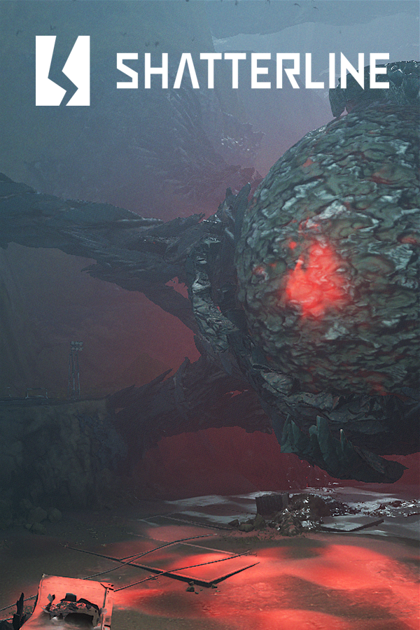

Shatterline
Shatterline
Details
|  | |
| Playtime | 1h 31m 0s |
| Last Activity | 15/02/2023 21:49:20 |
| Added | 16/07/2023 23:55:11 |
| Modified | 17/07/2023 21:07:20 |
| Completion Status | Played |
| Library | Steam |
| Source | Steam |
| Platform | PC (Windows) |
| Release Date | 08/09/2022 |
| Community Score | |
| Critic Score | |
| User Score | |
| Genre | Shooter |
| Developer | Frag Lab LLC |
| Publisher | Frag Lab LLC |
| Feature | Co-Operative Multiplayer |
| Links | Steam YouTube Discord Official Twitch Wikia |
| Tag | |
Description
Welcome to Shatterline - ground zero for the apocalypse. Are you ready?

Shatterline is a fierce, intense free-to-play multiplayer FPS, offering roguelike co-op PVE modes as well as competitive PvP modes. Immerse yourself in a world of explosive action; smooth, satisfying gunplay; wild customizations; and a striking landscape full of secrets, rewards, and deadly opponents.
A mysterious interstellar object has exploded near Earth, sending massive, jagged shards smashing into our planet’s surface - turning thriving cities into toxic craters and leaving millions dead.

From this destruction, a new horror has risen: an alien contaminant called “Crystalline” that tears apart geomagnetic fields and transforms living flesh to razor-edged silica. And it’s spreading.
You enter the game as a skilled Operative, part of an elite team chosen to fight this menace. Choose from unique and powerful characters, including: a lethal sniper, armored juggernaut, experimental warfare specialist, fearless medic, and more - each has tailored gameplay, weapons expertise, and special abilities. Your mission: to eliminate the Crystalline and save what’s left of humanity.

We are FragLab, located in Ukraine, and Shatterline has been our passion for the past five years. We are really excited to share this current release with you, our passionate player community.
This early access phase allows us to invite you into our development process, and your feedback truly matters. Our dev team is very active in Discord; we play together and gather community feedback every day. We dive into analyzing this feedback every week, plus in-game telemetry and other data, and use that information to continue to improve the game - tinkering, tweaking, and iterating. It’s entirely possible for a wild, great idea to survive this intense community scrutiny, and focused in-house debate to land on our future development roadmap. So tell us what you think - it matters.
Thank you for being part of the Shatterline journey. And enjoy!
Shatterline is a fierce, intense free-to-play multiplayer FPS, offering roguelike co-op PVE modes as well as competitive PvP modes. Immerse yourself in a world of explosive action; smooth, satisfying gunplay; wild customizations; and a striking landscape full of secrets, rewards, and deadly opponents.
A mysterious interstellar object has exploded near Earth, sending massive, jagged shards smashing into our planet’s surface - turning thriving cities into toxic craters and leaving millions dead.
From this destruction, a new horror has risen: an alien contaminant called “Crystalline” that tears apart geomagnetic fields and transforms living flesh to razor-edged silica. And it’s spreading.
You enter the game as a skilled Operative, part of an elite team chosen to fight this menace. Choose from unique and powerful characters, including: a lethal sniper, armored juggernaut, experimental warfare specialist, fearless medic, and more - each has tailored gameplay, weapons expertise, and special abilities. Your mission: to eliminate the Crystalline and save what’s left of humanity.
We are FragLab, located in Ukraine, and Shatterline has been our passion for the past five years. We are really excited to share this current release with you, our passionate player community.
This early access phase allows us to invite you into our development process, and your feedback truly matters. Our dev team is very active in Discord; we play together and gather community feedback every day. We dive into analyzing this feedback every week, plus in-game telemetry and other data, and use that information to continue to improve the game - tinkering, tweaking, and iterating. It’s entirely possible for a wild, great idea to survive this intense community scrutiny, and focused in-house debate to land on our future development roadmap. So tell us what you think - it matters.
Thank you for being part of the Shatterline journey. And enjoy!